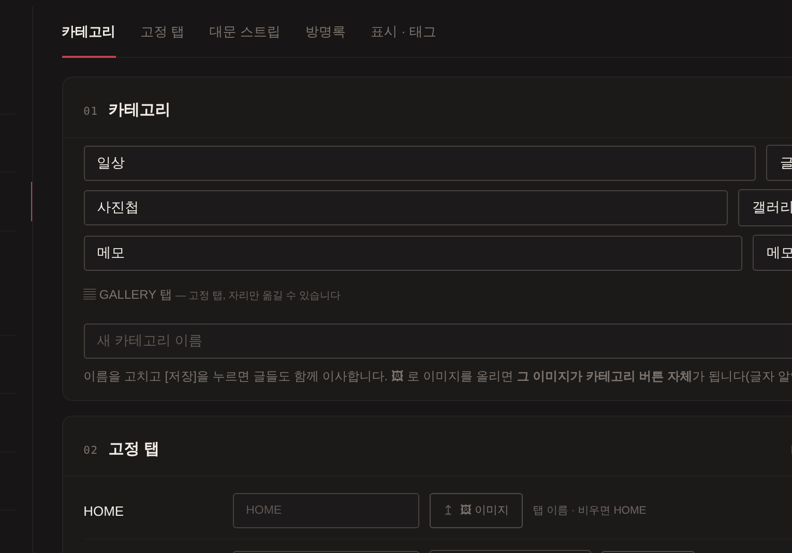

러브로그 · 꾸미기
카테고리와 탭 관리
카테고리를 추가하고 타입을 정합니다. 이름을 바꾸면 기존 글·사진·폴더도 같이 이사합니다. 탭 위쪽의 「카테고리 / 고정 탭 / 대문 스트립 / 방명록 / 표시·태그 / 비밀글」로 바로 이동합니다.
타입 4종
- 글
- 일반 게시판. 행 아래 🏷 칸에 자주 쓸 태그를 미리 등록해 두면 글 쓸 때 ＋로 붙일 수 있습니다.
- 사진
- 낱장 그리드 갤러리. 사진 올릴 때(또는 ✎ 수정에서) 카테고리를 골라 담습니다. 갤러리 화면 오른쪽 위 〈☑ 선택〉을 누르면 여러 장을 체크해 한 번에 지우거나, 〈📁 이동…〉으로 다른 갤러리 카테고리로 옮길 수 있습니다.
- 사진첩
- 제목 있는 사진 폴더가 단위. 탭을 열면 폴더 표지 카드(또는 제목만 목록), 폴더를 열면 사진이 펼쳐집니다. 폴더마다 보는 방식 — 세로로 쭉 / 정사각 그리드 / 타일 / 슬라이드. 만들기는 탭 오른쪽 위 ＋ ADD(제목·📅 날짜·사진 여러 장 한 번에, ◀▶·드래그로 순서). RP 로그 사진 백업처럼 한 컨셉을 한 뭉치로 모을 때.
- 메모
- 짧은 글 카드 그리드. 메모형 글 참고.

사진 자리img/ll-cat-types.png태그 바 · 통합 제외
- 🏷 태그 바 — 「표시·태그」에서 글 목록 위 태그 줄에 보일 태그를 고르고 ↑↓로 순서. 순서를 안 정한 태그는 가나다순으로 뒤에.
- 📖 연재 — 태그마다 「연재」를 켜면 그 태그 글 아래에 이전 / 다음과 목차가 붙습니다(읽기).
- 🔒 🔏 표시 — 「표시·태그」에서 비밀글 · 비공개 글 제목 뒤에 붙는 표시를 바꿉니다(이모지 · [LOCKED] 같은 글자 · 없애려면 -).
- 메모 카테고리 「탭 숨기기」 — 켜면 카테고리 줄 · 메뉴 · 카테고리 위젯에서 빠지고, 글쓰기와 달력에서 여는 것은 그대로입니다.
- 통합 갤러리 제외 — 사진·사진첩 행의 〈통합 제외〉를 켜면 그 사진은 GALLERY 탭과 대문 최근 스트립에 안 뜨고 그 카테고리 탭에서만 보입니다.
방명록
- 「방명록」 칸에서 안내 문구 · 비었을 때 문구 · 모양 · 한 페이지 개수를 정합니다. 「방명록 모양」은 — 기본 카드 · 테마에 맞추기(지금 고른 테마의 것) · 포스트잇 벽 · 시스템 로그(검은 · 흰 터미널) · 노트 · Win98 창 · VHS 녹화 · Y2K 카드 · 네온 · 옛 신문 독자 투고 · 사이버펑크. 테마와 상관없이 하나를 골라 쓸 수도 있습니다. 고르면 바로 저장됩니다.
고정 탭
- HOME · GALLERY · GUESTBOOK · ALL 줄이 「고정 탭」 칸에 이름 · 보이기 · 끄기 · 이미지 순으로 정리돼 있습니다. 카테고리 목록의 ↑↓로 순서. 목록에 GALLERY·GUESTBOOK 줄도 함께 있어 섞을 수 있습니다(HOME 맨 앞, ALL 맨 뒤 고정).
- GALLERY 탭은 [탭 보이기 / 알약만 숨기기 / 탭 숨기기]. GALLERY·GUESTBOOK 이름도 직접 변경(비우면 원래대로).
- 방명록 줄의 끄기 = 방명록 탭 숨김(기존 글 보존). ALL 줄의 끄기 = 전체 글 탭 숨김.
- 카테고리 버튼에 사진을 쓰려면 [🖼 이미지 추가].
대문 스트립
「대문 스트립」 칸 — 표시 / 장수 · 비율 / 사진 출처 세 줄입니다. 갤러리와 별개 — 갤러리 탭을 숨겨도 스트립만 켤 수 있고, 사진은 대문의 ＋ 카드(편집 모드)로 직접 올려도 됩니다. 사진은 최신 / ★로 고른 사진 / 특정 카테고리, 모양(4:3 / 와이드 / 정사각 / 세로 / 원본)과 장수(2~6). ★는 GALLERY에서 사진 왼쪽 위 ★.
🔒 비밀글
- 일괄 작업 — 여러 글을 한 번에 비밀글로 잠그거나, 비밀번호를 바꾸거나, 풉니다. 카테고리를 고른 뒤 글을 체크하고 현재 비밀번호 · 새 비밀번호를 넣고 실행. 전부 이 브라우저 안에서 풀고 다시 잠그므로 서버에는 암호문만 갑니다.
- 🔑 복구 비밀번호 — 글마다 다른 비밀번호를 써도 이 하나로 열고 새로 정할 수 있습니다. 앞으로의 비밀글엔 자동 적용, 예전 비밀글은 한 번 정상적으로 열어 두면 함께 적용. 운영자는 여전히 내용을 볼 수 없고, 복구 비밀번호까지 잊으면 방법이 없으니 꼭 적어 두세요.